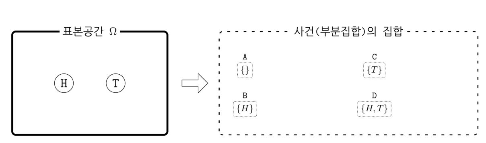
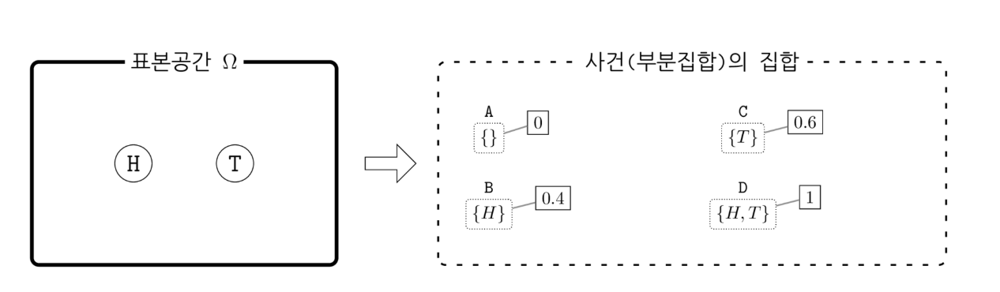

확률의 수학적 정의와 의미
Summary
- 확률은 사건을 입력하면 숫자가 출력되는 함수이다. 모든 각각의 사건(부분집합)에 어떤 숫자를 할당하는 함수이다.
- 빈도주의는 반복적으로 선택된 표본이 사건(부분 집합) 𝐴의 원소가 될 경향(propensity)을 그 사건의 확률이라고 한다. 베이지안 관점은 선택된 표본이 특정한 사건(부분 집합)에 속한다는 가설(hypothesis), 명제(proposition) 혹은 주장(assertion)의 신뢰도(degree of belief)라고도 볼 수 있다. 여기에 반복이라는 개념은 사용되지 않는다.
- 빈도주의는 참된 확률값이 point estimate(점추정)으로 존재하고 가설 검증을 통해 채택/기각한다. 베이지안은 주사위가 1이 나올 확률이 어떤 확률분포를 가지고 있다 생각하고 사전확률분포(믿음)을 발생되는 데이터를 통해 사후확률분포(새로운 믿음)를 업데이트 해나갑니다.
표본공간과 확률분포
확률표본(probabilistic sample, random sample) 또는 표본(sample) 은 풀고자 하는 확률적 문제에서 발생(realize)할 수 있는 하나의 현상, 혹은 선택(sampled)될 수 있는 하나의 경우를 말한다.
표본공간(sample space) 은 가능한 모든 표본의 집합. 보통 라는 그리스 문자로 표기한다. 표본 공간을 정의한다는 것은 우리가 고려하는 범위에서 어떤 표본(경우, 현상)이 가능하고 어떤 표본이 가능하지 않은가를 정의하는 작업이다.
사건
사건(event)은 표본공간 Ω의 부분집합이다. 전체 표본공간 중에서 우리가 관심을 가지고 있는 일부 표본의 집합을 뜻한다. 보통 𝐴,𝐵,𝐶,⋯ 식으로 대문자 알파벳으로 표기한다.

확률
확률(probability): 사건(부분집합)을 입력하면 숫자(확률값)가 출력되는 함수이다.
확률이라는 함수의 입력값의 집합 즉, 정의역(domain)은 표본공간의 모든 사건(부분집합)의 집합이다. 모든 각각의 사건(부분집합)에 어떤 숫자를 할당(assign, allocate)하는 함수가 확률이다. 보통 대문자 알파벳 𝑃 로 나타낸다. 확률 𝑃는 함수이고 𝑃(𝐴)는 𝐴라는 사건(부분집합)에 할당된 숫자를 뜻한다.
콜모고로프의 공리(Kolmogorov's axioms)
(1) 모든 사건에 대해 확률은 실수이고 0 또는 양수이다. (2) 표본공간(전체집합)이라는 사건(부분집합)에 대한 확률은 1이다. (3) 공통 원소가 없는 두 사건의 합집합의 확률은 각각의 사건의 확률의 합이다. 
확률은 표본이 아닌 사건을 입력으로 가지는 함수
확률은 표본이 아닌 사건(부분집합)에 대해 정의하기 때문이다. 올바른 식은 다음과 같다.
표본의 갯수가 유한하고 각 사건에 대해 원소의 갯수 이외의 아무런 정보가 없다면 각 사건의 확률을 다음과 같다고 보는 것이 타당하다.
만약 다른 곳에서 얻은 정보(예: 자연법칙 또는 도메인 지식)이나 표본에 대한 데이터가 존재하는 경우에는 보다 믿을 수 있는 확률값을 계산할 수 있다.
파이썬을 이용한 확률의 구현
파이썬에서는 사건을 키(key)로 가지고 숫자를 값(value)으로 가지는 딕셔너리를 사용하여 확률 함수를 구현할 수 있다. 이 때 딕셔너리의 키는 가능한 모든 부분집합이 되어야 한다. 동전의 경우에는 가능한 부분집합의 수가 𝐴=∅, 𝐵={𝐻}, 𝐶={𝑇}, 𝐷={𝐻,𝑇} 4개이므로 파이썬으로 구현하면 다음과 같다.
P = {A: 0, B: 0.4, C: 0.6, D: 1}
P
# 결과
#{frozenset(): 0,
# frozenset({'H'}): 0.4,
# frozenset({'T'}): 0.6,
# frozenset({'H', 'T'}): 1}
확률의 의미
빈도주의는 반복적으로 선택된 표본이 사건(부분 집합) 𝐴의 원소가 될 경향(propensity)을 그 사건의 확률이라고 한다.
베이지안 관점은 선택된 표본이 특정한 사건(부분 집합)에 속한다는 가설(hypothesis), 명제(proposition) 혹은 주장(assertion)의 신뢰도(degree of belief)라고도 볼 수 있다. 여기에 반복이라는 개념은 사용되지 않는다.